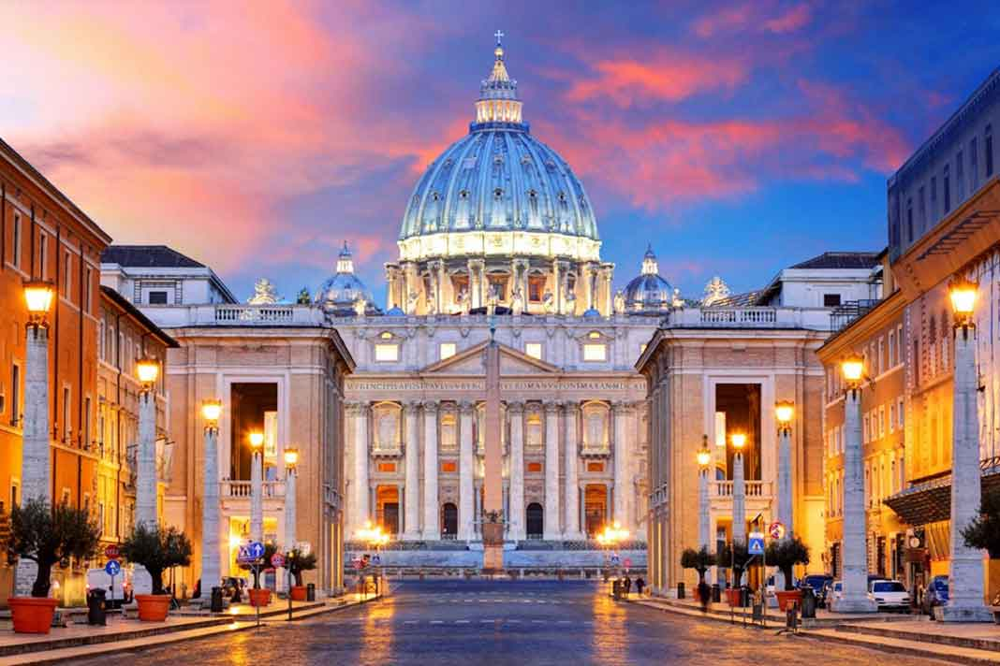

>Na Igreja Católica, a missa é celebrada com diversos objetos litúrgicos. Esses elementos possuem significados importantes e ajudam na realização dos rituais. Cada objeto tem uma função específica durante a celebração. Eles contribuem para a organização e a beleza da liturgia.
Os objetos litúrgicos são utilizados principalmente pelo sacerdote e pelos ministros. Eles estão presentes no altar e em outros momentos da missa. Muitos deles são considerados sagrados e devem ser tratados com respeito. Seu uso segue tradições antigas da Igreja.
Conhecer esses objetos ajuda os fiéis a compreender melhor a missa. Cada detalhe possui um significado profundo dentro da fé católica. Isso torna a participação mais consciente e significativa. A liturgia é rica em símbolos e ensinamentos.
Cálice, Patena, Missal, Altar, Crucifixo, Turíbulo, Naveta, Galhetas, Hóstia, Corporal